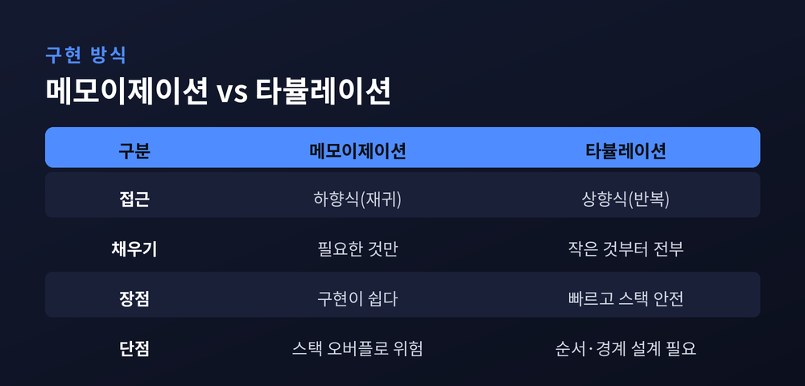
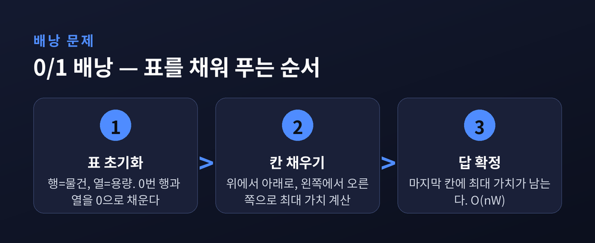
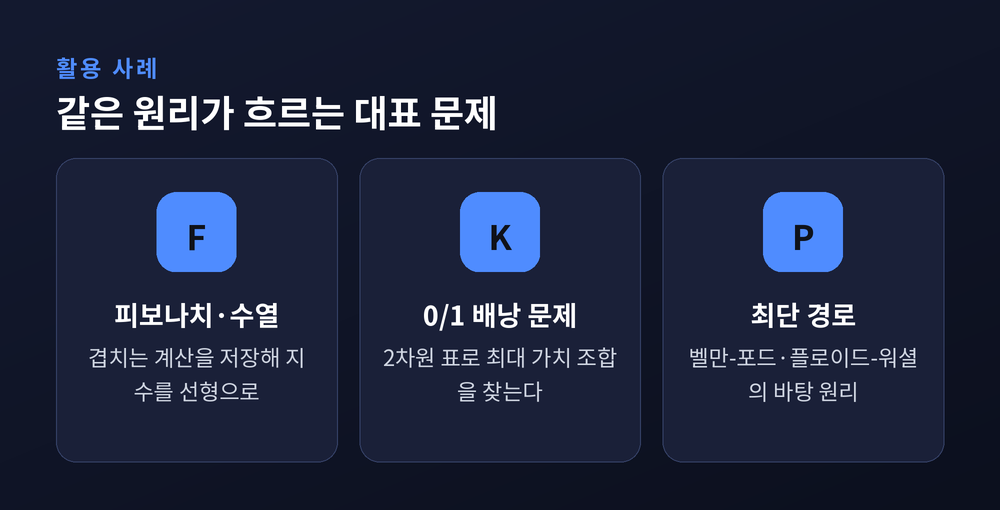

이번 글에서는 동적 계획법(Dynamic Programming)을 원리 중심으로 정리해 보겠습니다. 같은 계산을 몇 번이고 되풀이하던 프로그램이 어떻게 단 한 번의 계산으로 답을 건네게 되는지, 그 발상의 전환을 따라가 보려 합니다. 이름은 거창하지만, 뿌리에 있는 생각은 의외로 단순합니다.
동적 계획법은 큰 문제를 작은 부분 문제로 쪼갠 뒤, 각 부분 문제의 답을 한 번만 계산해 저장해 두고 다시 꺼내 쓰는 기법입니다.
발상의 핵심은 여기에 있습니다. 한 번 구한 답을 메모리에 적어 두는 것입니다. 같은 질문이 다시 오면, 다시 풀지 않고 적어 둔 답을 그대로 돌려줍니다.
이 단순한 습관 하나가 계산량을 극적으로 바꿉니다. 지수적으로 폭발하던 계산이 다항 시간으로 내려앉습니다.
예전에는 이름 때문에 오해가 잦았습니다. 여기서 말하는 '프로그래밍'은 코드를 짜는 일이 아닙니다. 최적의 '계획표'를 짠다는 뜻에 가깝습니다.
이 이름에는 유명한 일화가 있습니다. 창시자 리처드 벨만은 1950년대 랜드연구소에서 이 기법을 정리했는데, 당시 '연구(research)'라는 단어를 싫어하던 국방장관을 피하려 무해하게 들리는 이름을 골랐다고 회고했습니다. 다만 이 일화는 시점이 맞지 않는다는 반론도 있어, 사실로 단정하기는 어렵습니다.
동적 계획법은 만능 열쇠가 아닙니다. 두 가지 성질을 모두 갖춘 문제에만 힘을 발휘합니다.
첫째는 최적 부분 구조입니다. 큰 문제의 최적해가 작은 부분 문제들의 최적해로 조립될 수 있어야 합니다. 예를 들어 N번째 피보나치 수는 (N-1)번째와 (N-2)번째 수의 답으로 그대로 만들어집니다.
둘째는 중복되는 부분 문제입니다. 큰 문제를 푸는 동안 똑같은 부분 문제가 몇 번이고 다시 등장해야 합니다. 겹침이 있어야 저장해 둔 답이 쓸모를 얻습니다.
바로 이 둘째 조건이 분할 정복과 갈리는 지점입니다. 병합 정렬 같은 분할 정복도 문제를 잘게 나눕니다. 그러나 그 부분 문제들은 서로 겹치지 않습니다. 겹치지 않으니 저장해 둘 이유도 없습니다. 반대로 동적 계획법은 겹치기 때문에 저장이 곧 이득이 됩니다.
가장 익숙한 예가 피보나치 수열입니다.
순진하게 재귀로 짜면 fib(n)은 자신을 두 번씩 다시 부릅니다. 호출이 호출을 낳아, 함수를 부르는 횟수가 눈덩이처럼 불어납니다. 시간복잡도는 O(2^n), 지수 시간입니다.
수치로 보면 낭비가 뚜렷합니다. fib(5) 하나를 구하는 데 함수 호출이 무려 15번 일어나고, 그중 11번이 이미 했던 계산을 또 하는 중복입니다. n이 커질수록 이 낭비는 감당하기 어려워집니다.
여기에 동적 계획법을 얹으면 이야기가 달라집니다. fib(k)를 한 번 구하면 곧바로 적어 둡니다. 서로 다른 부분 문제는 fib(0)부터 fib(n)까지 n개뿐이므로, 각각을 딱 한 번씩만 계산하면 됩니다. 시간복잡도가 O(n), 선형으로 내려앉습니다.
O(2^n)과 O(n). 말로는 로그 하나 차이 같지만, n이 50만 되어도 전자는 사실상 끝나지 않고 후자는 눈 깜짝할 사이에 끝납니다.
같은 원리를 코드로 옮기는 길은 둘로 나뉩니다.
하나는 메모이제이션입니다. 하향식(Top-Down)이라 부릅니다. 익숙한 재귀 구조를 그대로 두되, 계산한 답을 배열이나 해시맵에 저장하는 방식입니다. 필요한 부분 문제만 계산하고, 기존 재귀 함수에 저장 한 줄만 더하면 되니 구현이 쉽습니다. 대신 재귀 호출 비용이 붙고, 재귀가 너무 깊으면 호출 스택이 넘칠 위험이 있습니다.
다른 하나는 타뷸레이션입니다. 상향식(Bottom-Up)입니다. 가장 작은 기저 사례부터 표를 반복문으로 차곡차곡 채워 올라가 최종 답에 닿습니다. 재귀가 없어 대체로 더 빠르고 스택 걱정이 없습니다. 다만 표를 채우는 순서와 경계 조건을 직접 설계해야 해서 손이 조금 더 갑니다.

시간복잡도 자체는 두 방식이 대체로 같습니다. 둘 다 서로 다른 부분 문제의 개수에 비례하기 때문입니다. 갈리는 것은 상수 계수와 메모리 씀씀이입니다.
메모이제이션은 재귀 호출을 위한 스택 공간을 따로 씁니다. 타뷸레이션은 표 공간만 쓰고, 종종 그 표마저 1차원으로 눌러 담아 메모리를 더 줄일 수 있습니다. 모든 부분 문제를 반드시 풀어야 하는 문제라면 타뷸레이션이 상수 계수만큼 앞서는 경향이 있습니다.
완벽한 우열은 없습니다. 문제의 결에 맞춰 고르시면 됩니다.
동적 계획법이 표 위에서 어떻게 움직이는지는 배낭 문제에서 잘 드러납니다.
문제는 이렇습니다. 무게 한계가 정해진 배낭에, 저마다 무게와 가치가 다른 물건들을 넣습니다. 무게를 넘기지 않으면서 가치의 합을 가장 크게 만드는 조합을 찾는 것입니다. '0/1'은 물건을 쪼갤 수 없이 담거나 안 담거나 둘 중 하나라는 뜻입니다.
풀이는 표 한 장으로 정리됩니다. 물건 수만큼의 행과 용량만큼의 열을 두고, 맨 윗줄과 맨 왼쪽 줄을 0으로 채운 뒤 위에서 아래로, 왼쪽에서 오른쪽으로 칸을 메웁니다. 각 칸은 '지금까지의 물건과 이만큼의 용량에서 낼 수 있는 최대 가치'를 담습니다. 마지막 칸에 최종 답이 남습니다.

복잡도는 물건 수와 용량을 곱한 O(nW)입니다. 다항식처럼 보이지만 용량이라는 수치 크기에 매이므로, 엄밀히는 의사 다항(pseudo-polynomial) 알고리즘으로 분류합니다. 각 행이 바로 윗 행에만 기대는 성질을 이용하면, 표를 1차원으로 줄여 메모리를 더 아낄 수도 있습니다.
한 가지 덧붙이면, 0/1 배낭은 눈앞의 가치만 좇는 탐욕적 방법으로는 최적해를 보장하지 못합니다. 무게당 가치가 높은 물건을 먼저 담는 식으로는 어긋나는 경우가 생깁니다. 표를 끝까지 채워 모든 경우를 따져야 비로소 최선의 조합이 드러납니다.
동적 계획법은 교과서 예제에만 머물지 않습니다. 그래프의 최단 경로를 구하는 고전 알고리즘들이 모두 이 원리 위에 서 있습니다.
벨만-포드는 간선을 반복해서 완화하며 답을 갱신합니다. 음의 가중치까지 다룰 수 있는 단일 출발점 최단 경로입니다. 플로이드-워셜은 경유할 수 있는 정점을 하나씩 늘려 가며 모든 쌍의 최단 경로를 채워 나갑니다. 둘 다 '더 작은 경로의 답을 재활용해 더 큰 답을 만든다'는 같은 골격을 지녔습니다.
"최적의 선택은, 그 첫 결정 이후 남은 결정들도 다시 최적을 이뤄야 한다." 벨만의 최적성 원리는 최적 부분 구조를 의사결정의 언어로 옮긴 문장입니다.

정리하면 이렇습니다. 동적 계획법은 화려한 묘수가 아니라, 낭비를 정직하게 걷어 내는 절약의 기술입니다. 겹치는 문제를 알아보고, 한 번 구한 답을 버리지 않고 다시 쓰는 것. 그 한 걸음이 지수의 벽을 다항의 언덕으로 낮춥니다.
핵심은 짧게 압축됩니다. "같은 답을 두 번 계산하지 않는다."
풀리지 않아 막막했던 문제 앞에서, 혹시 같은 계산을 되풀이하고 있지는 않은지 한 번 되물어 보시길 권합니다. 답은 이미 어딘가에 적혀 있을지도 모릅니다.